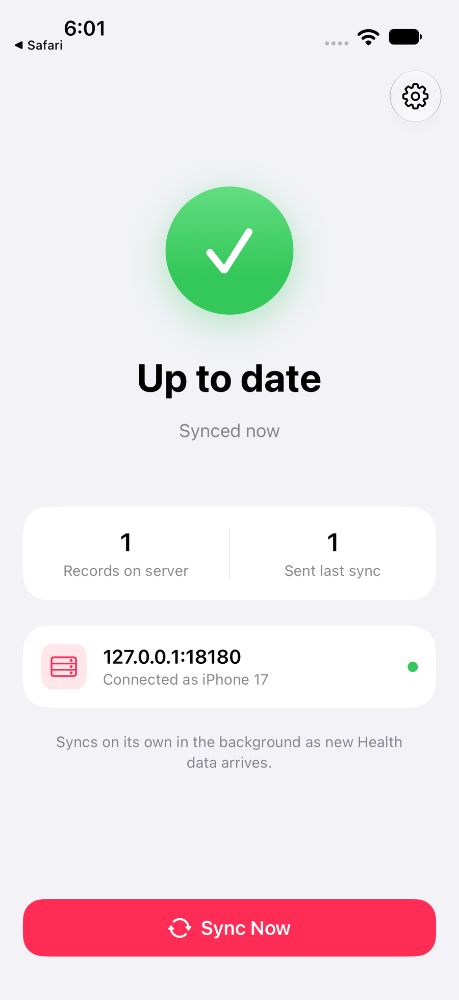

Pairing an iPhone¶
Pairing connects the Health Relay app to your server. You show the iPhone a setup code, a one-time code that the setup page shows as a QR code. The app trades it for a token of its own, and the iPhone becomes a paired device: its token uploads its Health data and does nothing else. The admin token stays with you, and you can revoke each paired device on its own. The glossary defines each of these words.

From the setup page¶
- On a computer, open the setup page: your server address followed by
/setup, e.g.http://192.168.1.10:8080/setupon your home network orhttps://health.example.ts.net/setupwith Tailscale. Enter the admin token and click Sign in. The sign-in lasts one hour. - The page shows Pair your iPhone, a QR code and Waiting for your iPhone, with the time the code expires. If it also shows Server address in the code, click the address your iPhone reaches.
- On the iPhone, open the Camera, point it at the QR code and tap Open in Health Relay.
- The app asks whether to connect to your server: tap Connect. If iOS asks to find devices on your local network, tap Allow.
- The setup page shows iPhone paired and your iPhone's name. A few seconds later it shows a new code and lists your iPhone under Paired devices.
- In the app, tap Continue under Allow Health access. Health asks what Health Relay may read: turn on every category, then tap Allow. (On iOS 27, tap Select All, then All Recorded Data.)
To pair without a second screen, the setup page also shows a link with the code and a copy button. Send the link to the iPhone, e.g. by message to yourself, and open it there: the page shows an Open in Health Relay button. Tap it, then continue at step 4.
The first sync¶
The first sync sends your whole Health history. With years of Apple Watch data it takes a while: keep the app open until it is done.
- The app shows Syncing, then Up to date and when it last synced, e.g. Synced 2 minutes ago.
- Records on server counts the records the server holds.
- The card with your server address shows Connected as and your iPhone's name.
After that, Health Relay syncs in the background several times a day; open the app to sync right away. iPhone keeps Health data locked while the phone is locked, so background syncs happen after you unlock it. Low Power Mode, and swiping the app away in the app switcher, hold them back until you open the app. Sync Now, or pulling down on the main screen, syncs at once; on iOS 26 and later, a long sync started this way goes on when you leave the app, and iOS shows its progress in a Live Activity, where you can also stop it.
From the terminal¶
On the server, pair prints a setup code as a QR code in the terminal, with the setup
page's link for the same code:
docker compose exec relay healthkit-relay pair # Docker Compose
sudo healthkit-relay-ctl pair # NixOS
sudo healthkit-relay pair -archive-dir /var/lib/healthkit-relay \
-public-url http://192.168.1.10:8080 # systemd
healthkit-relay pair -archive-dir ./data \
-public-url http://192.168.1.10:8080 # a server you run yourself
Scan the QR code with the iPhone's Camera, then continue at step 3 above.
The commands (pair, devices, revoke, token create, admin reset) change the files in
the archive (-archive-dir or HKR_ARCHIVE_DIR), with the server running. The server
rereads the files when they change. Run the commands as the server's user or as root. They
take the server's flags and HKR_ variables: -public-url sets the server address in the
code.
To send the code's link to your iPhone by message or email, make the code last longer, up to
24h:
Managing devices¶
The setup page lists your paired devices under Paired devices, each with a Revoke button. From the terminal:
devices prints one line per paired device and read token, e.g.:
Revoking takes effect at once. At its next sync, the app shows Disconnected and asks you to scan a new setup code. Pairing the same iPhone again gives it a new token, and its old token stops working.
How setup codes work¶
- A setup code is 120 random bits, written as 24 letters and digits, e.g.
PONKKR6RFXEX5WUCJQI6EBNX. It works once and expires after 15 minutes, or after the timepair -validsets, up to a day. The server keeps the codes' SHA-256 hashes incodes.jsonin the archive, so a code still works after a restart, until it expires. - The QR code holds a link that opens the app, with the code and the server address:
healthrelay://pair?code=PONKKR6RFXEX5WUCJQI6EBNX&server=http%3A%2F%2F192.168.1.10%3A8080. - The app trades the code for its own token, 256 random bits. The server keeps only the token's SHA-256 hash, with the iPhone's name and model.
- By default, the setup page and pairing answer only private networks (
-setup-from private): the server's own computer, your home network (addresses such as192.168.1.25) and Tailscale.-setup-from offturns the setup page off; the terminal commands keep working. - A code holds an address the iPhone can reach: a LAN or Tailscale address, a
tailscale servename, or-public-url. Loopback (127.0.0.1) and link-local addresses stay out. When the server finds no such address, the setup page shows Set the server address, with how to set-public-url.
Manual setup¶
In the app, Enter Server Details Instead takes the server address and the admin token. The app trades the admin token for a token of its own straight away, and keeps only that one.
An app set up by hand with an earlier version may still upload with the admin token (the
server token of earlier versions). This release accepts it, logs a warning at most once an
hour and counts it in healthkit_relay_admin_token_uploads_total on /metrics. Pair that
iPhone again from the setup page.
Leaving¶
In the app, open Advanced (the gear icon):
- Disconnect forgets the server on the iPhone. The data on the server stays there.
- Erase Server Data and Start Over deletes everything this iPhone uploaded, for good, then uploads it all again.
To delete one iPhone's data and keep it deleted, revoke the paired device, then erase its
data with the admin token and the device's ID from devices:
curl -X DELETE -H "Authorization: Bearer <admin token>" \
"http://127.0.0.1:8080/v1/data?confirm=erase&device=3f9a1c2e"
To delete everything, stop the server and delete the archive. Read Backups before you do either.